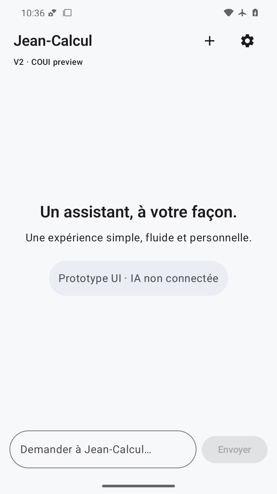
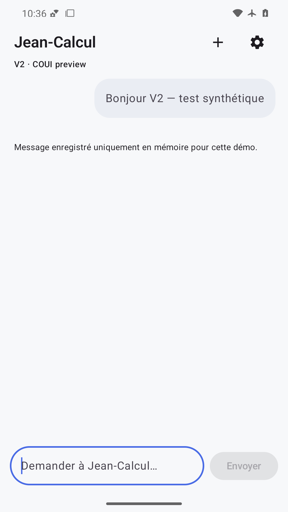

Accueil lisible, statut contrasté, actions et saisie visibles avec marges système.

Bulle synthétique et avertissement mémoire lisibles, saisie non masquée.
Galerie locale de données synthétiques. Ouvrir chaque PNG avec la vision native de l'agent. La présence d'une image n'atteste pas sa revue.

Accueil lisible, statut contrasté, actions et saisie visibles avec marges système.

Bulle synthétique et avertissement mémoire lisibles, saisie non masquée.